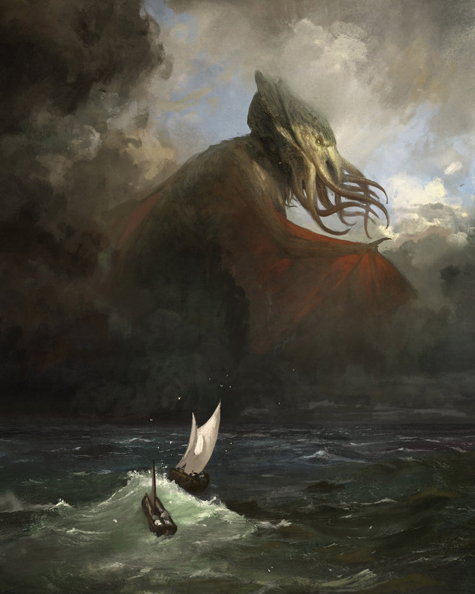

⊙ CORE CATEGORY 02 · 角色战力档案库
2 / 2 位
角色战力档案目录
全站核心角色目录：支持按主档量级从小到大与按拼音首字母（A–Z）双模式实时切换；点击任一角色卡片进入专属独立档案页面，返回时自动恢复当前排序与浏览位置。
已收录角色档案
2 位（100% 独立定级全文页）
覆盖作品出处
《诡秘地海》 · 《非人学园》
当前收录量级跨度
⊙城△（御兔）→ ⊙宇△（弗坦）
按主档量级从小到大排列（低量级 → 高量级）
2 位角色
⊙ 城△
嫦娥随身玩偶，暴走后化为肌肉发达的人形兔子。剧情 PV 中一拳将律师虎力打上月球，按地月距离与 5 秒赋予约四分之一光速计算，相对论动能约 1.8×10¹⁷～3.4×10¹⁷ J，落在强爆城级（⊙城△〔实〕）。
主档 ⊙城△〔实〕 · 保底 ⊙城○～城△〔实〕 · 存疑上限 国△
查看档案

⊙ 宇△
《诡秘地海》位阶最高神明（基金会 003 · Ehod 级），沉睡于地海深渊海沟画后时空，全书从未苏醒。跨所有位面唯一且永远不灭；010 观测的苏醒未来中可观测宇宙星辰清空，结合跨位面同步（至少十几个位面），综合定为强宇宙级下限 ⊙宇△（元·多，至少十几）〔下〕。
主档 ⊙宇△（元·多）〔下〕 · 保底 ⊙星○（掌控式）〔实〕 · 苏醒全力〔隐〕
查看档案